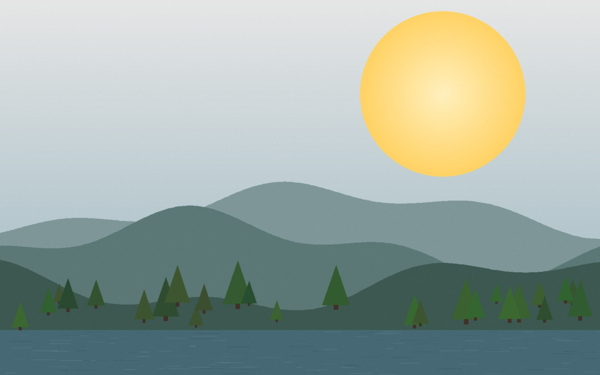
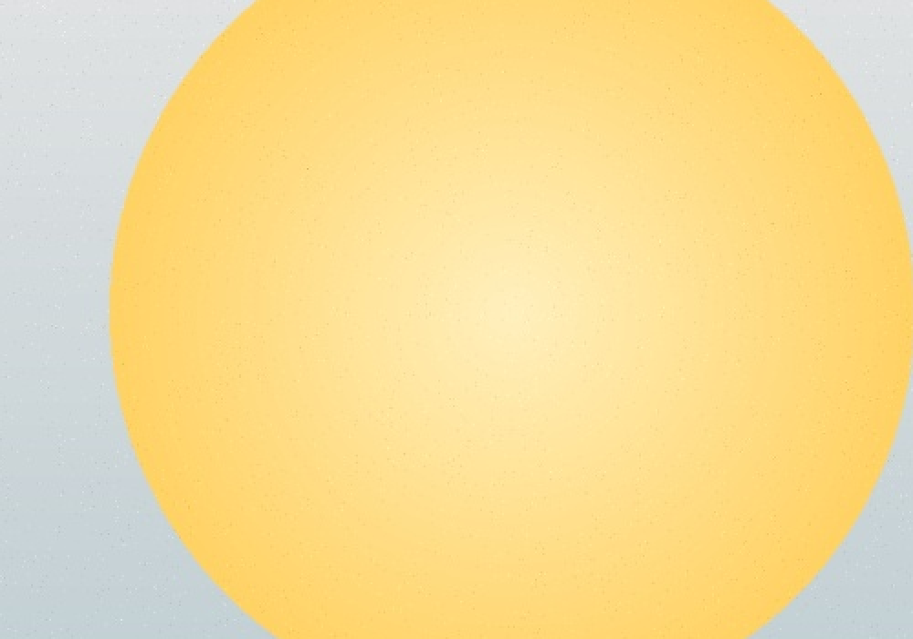
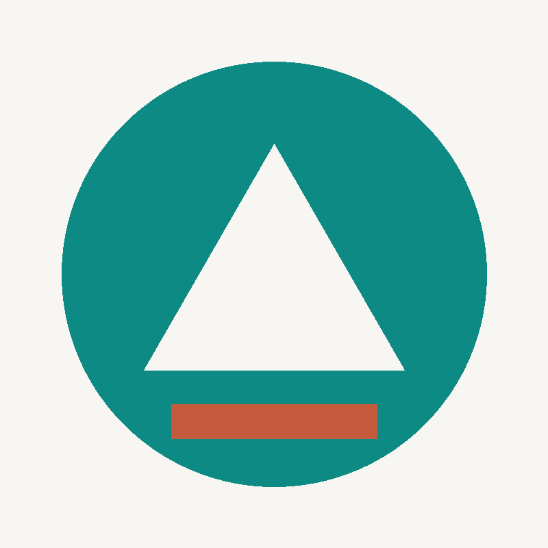

MODUL 01Komprese — kolik kvality stojí kolik kilobajtů
Stejná fotografie uložená se stejnými rozměry, ale různou kvalitou JPEG. Sleduj zároveň obrázek i velikost souboru.
255,6 kB
Celý snímek

Výřez kolem slunce (zvětšeno)

Výřez je k dispozici pro kvalitu 95 a 15 — právě na nich je rozdíl nejlépe vidět.
| Soubor | Formát | Ztrátová? | Velikost |
|---|---|---|---|
| foto_png.png | PNG | ne | 290,2 kB |
| foto_jpeg_q95.jpg | JPEG | ano | 255,6 kB |
| foto_jpeg_q75.jpg | JPEG | ano | 53,5 kB |
| foto_jpeg_q40.jpg | JPEG | ano | 33,0 kB |
| foto_jpeg_q15.jpg | JPEG | ano | 28,0 kB |
| foto_webp_q75.webp | WebP | ano | 14,3 kB |
| foto_gif.gif | GIF (256 barev) | ano | 180,5 kB |
Všimni si: mezi kvalitou 95 a 75 klesne velikost skoro pětinásobně, ale okem skoro nic nepoznáš. Mezi 40 a 15 se ušetří už jen 5 kB, zato je poškození dobře vidět. Kde bys ten kompromis udělal ty a proč?
MODUL 02Formát podle obsahu — kdy PNG vyhraje nad JPEG
Teď totéž, ale s plošnou grafikou — málo barev, ostré hrany. Přepínej a sleduj tabulku.
5,1 kB
logo_png.png

| Motiv | PNG | JPEG 95 | GIF | Vítěz |
|---|---|---|---|---|
| Fotografie krajiny | 290,2 kB | 255,6 kB | 180,5 kB | JPEG (při q75 jen 53,5 kB) |
| Logo, plošná grafika | 5,1 kB | 39,6 kB | 4,3 kB | PNG nebo SVG |
Pozor, tohle je klíčové: u loga je JPEG skoro 8× větší než PNG — a přitom vypadá hůř. Ztrátová komprese je stavěná na plynulé přechody, ne na ostré hrany. Napiš pravidlo, podle kterého budeš formát vybírat.
Rychlá kontrola — v jakém formátu uložíš snímek obrazovky s textem?